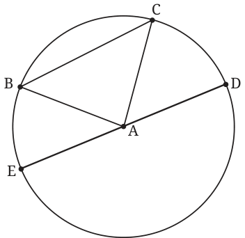

When we talk of mathematical shapes such as circles, triangles and squares, we always assume that the figures are drawn on a piece of paper — a two-dimensional plane.
A circle is the set of all points on the plane that are equidistant from a given point on that plane. The set of points that satisfy a given condition is also called the locus of points that satisfy the condition. Using this term, a circle can also be described as the locus of points that are equidistant from a given point. The given point is the centre of the circle. The distance from the centre to any point on the circle is the radius of the circle.

In Fig 5.3, A is the centre of the circle. All points on the plane at a distance equal to the length of AB from A form a circle with centre A and radius equal to the length of AB.
Let B and C be two points on the circle. The line segment BC is called a chord of the circle. The angle subtended by the chord BC at the centre is \(\angle BAC\). A chord passing through the centre of a circle is called a diameter.